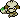
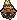
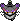

毛束Fur Tuft

道具
毛茸茸寶可夢身上的一撮柔軟體毛。可以賣給商店。
效果
從背包使用：「貴重物品。可以高價賣給友好商店。」
取得方式
任何友好商店都不販售。賣給友好商店可得 6
野生寶可夢掉落：
| 寶可夢 | 機率 | 數量 |
|---|---|---|
 皮皮 皮皮 | 10% | 1 |
 皮可西 皮可西 | 10% | 1 |
 胖丁 胖丁 | 10% | 1 |
 胖可丁 胖可丁 | 10% | 1 |
 喵喵 喵喵 | 10% | 1 |
 貓老大 貓老大 | 10% | 1 |
 大舌頭 大舌頭 | 10% | 1 |
 吉利蛋 吉利蛋 | 10% | 1 |
 袋獸 袋獸 | 10% | 1 |
 肯泰羅 肯泰羅 | 10% | 1 |
 百變怪 百變怪 | 10% | 1 |
 伊布 伊布 | 10% | 1 |
 多邊獸 多邊獸 | 10% | 1 |
 卡比獸 卡比獸 | 10% | 1 |
 尾立 尾立 | 10% | 1 |
 大尾立 大尾立 | 10% | 1 |
 皮寶寶 皮寶寶 | 10% | 1 |
 寶寶丁 寶寶丁 | 10% | 1 |
 波克比 波克比 | 10% | 1 |
 長尾怪手 長尾怪手 | 10% | 1 |
 土龍弟弟 土龍弟弟 | 10% | 1 |
 熊寶寶 熊寶寶 | 10% | 1 |
 圈圈熊 圈圈熊 | 10% | 1 |
 多邊獸Ⅱ 多邊獸Ⅱ | 10% | 1 |
 驚角鹿 驚角鹿 | 10% | 1 |
 圖圖犬 | 10% | 1 |
 大奶罐 大奶罐 | 10% | 1 |
 幸福蛋 幸福蛋 | 10% | 1 |
 蛇紋熊 | 10% | 1 |
 直衝熊 直衝熊 | 10% | 1 |
 懶人獺 懶人獺 | 10% | 1 |
 過動猿 過動猿 | 10% | 1 |
 請假王 請假王 | 10% | 1 |
 咕妞妞 咕妞妞 | 10% | 1 |
 吼爆彈 吼爆彈 | 10% | 1 |
 爆音怪 爆音怪 | 10% | 1 |
| 露力麗 | 10% | 1 |
 向尾喵 向尾喵 | 10% | 1 |
 優雅貓 優雅貓 | 10% | 1 |
 晃晃斑 晃晃斑 | 10% | 1 |
 貓鼬斬 貓鼬斬 | 10% | 1 |
| 飄浮泡泡 | 10% | 1 |
 變隱龍 變隱龍 | 10% | 1 |
 大牙狸 大牙狸 | 10% | 1 |
 雙尾怪手 雙尾怪手 | 10% | 1 |
 捲捲耳 捲捲耳 | 10% | 1 |
 長耳兔 長耳兔 | 10% | 1 |
 魅力喵 魅力喵 | 10% | 1 |
 東施喵 | 10% | 1 |
 小福蛋 小福蛋 | 10% | 1 |
 小卡比獸 小卡比獸 | 10% | 1 |
 大舌舔 大舌舔 | 10% | 1 |
| 多邊獸Ｚ | 10% | 1 |